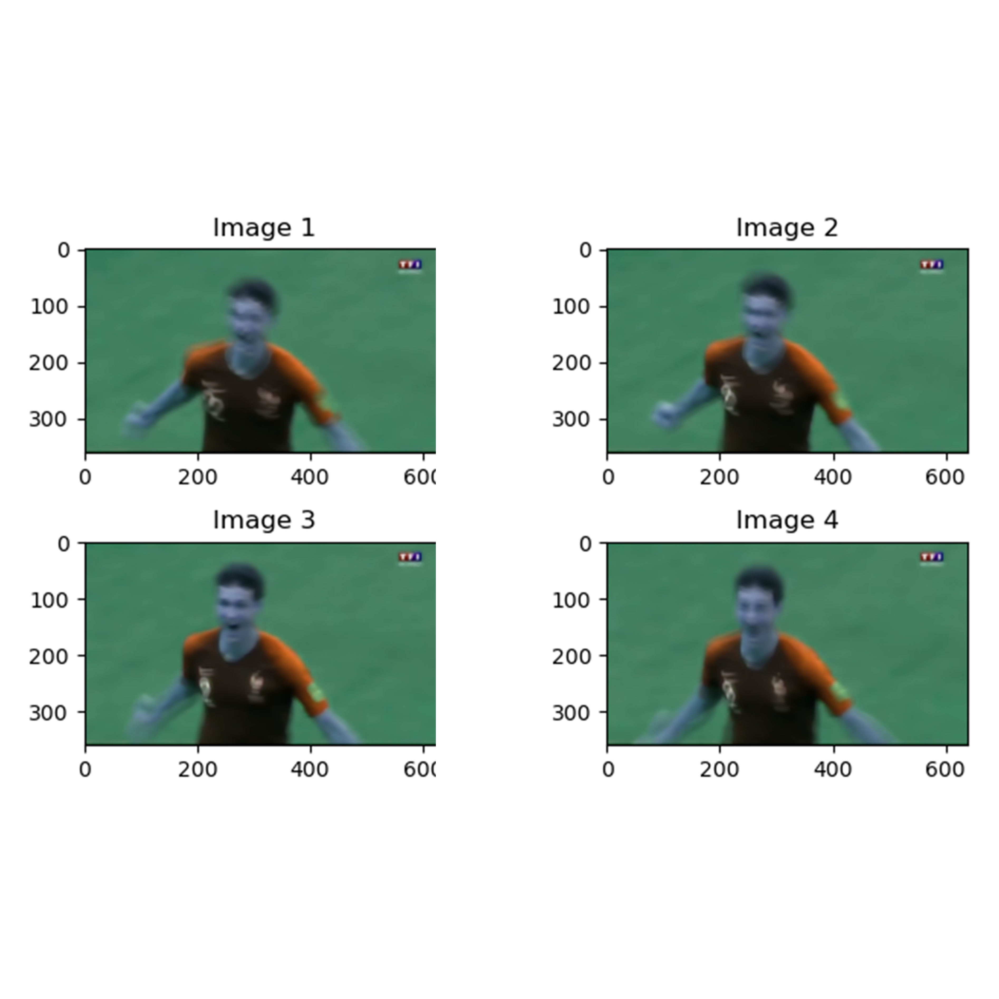
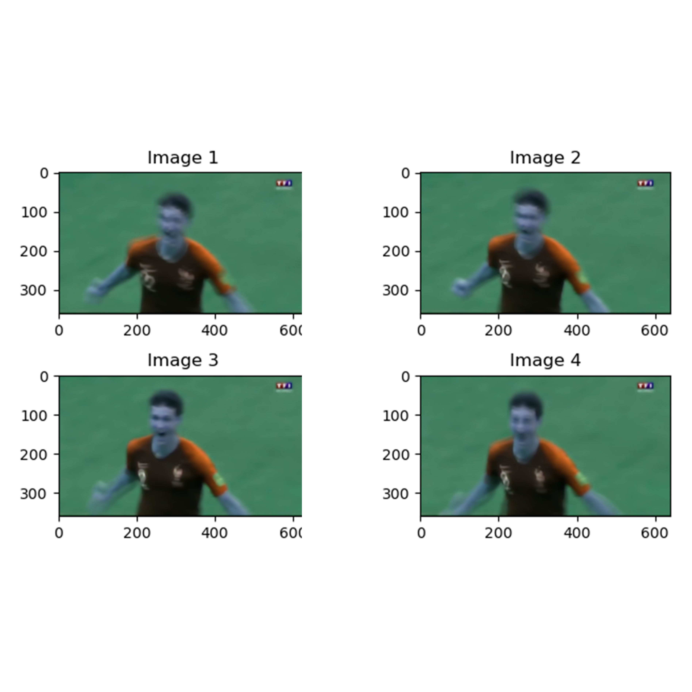

Bienvenue sur la page présentant mes études et formations. Découvrez le syllabus de mes études et les technologies que j'y ai manipulé.


 


[Mines Nancy] Département Informatique - Parcours Artificial Intelligent Systems
Septembre 2020 - Septembre 2024 | Nancy, France
Les Mines Nancy, école d'ingénieurs prestigieuse du groupe Mines-Télécom, forment des ingénieurs généralistes avec une forte expertise en sciences, technologies et management. Reconnue pour son excellence académique et ses liens avec l'industrie, elle propose des spécialisations dans des domaines innovants comme l'énergie, les matériaux et l'intelligence artificielle.
Cours suivis (non exhaustif) :
- Machine Learning and differentiable programming : CNN, RNN, Transformers, LLMs, Méthodes d'évaluation, Scaling laws, Incertitude en Deep Learning
- Scalable architectures & parallel computing : Parallel algorithms, Software architectures, Scalability, Elasticity
- Software Engineering.
- Inférence Statistique.
- Analyse de données.
- Outils pour le traitement et l'analyse d'image.
Technologies & Compétences: Python, PyTorch, Numpy, Pandas, Git, Environments Linux, SQL, Docker, Matlab, SQL, R, JavaScript, HTML, CUDA, Apprentissage supervisé, Apprentissage non-supervisé, LLM.
Liens utiles :


[Université de Lorraine] Master 2 Informatique - Parcours Apprentissage, Vision, Robotique
Septembre 2023 - Septembre 2024 | Nancy, France
J'ai suivi ce cursus en tant que double-diplôme lors de ma dernière année d'étude afin d'approfondir mes connaissances techniques dans le domaine du Machine Learning et de la vision par ordinateur. La formation se composait de cours magistraux lors desquels j'ai put étudier le fonctionnement de plusieurs technologies que j'ai par la suite implémentés et expérimentés lors de travaux pratiques. J'ai également eu l'occasion d'en étudier des variantes en détails lors de revue et présentation de la littérature scientifique.
Cours suivis :
- Apprentissage, Raisonnement dans l'incertain : Réseaux neuronaux et clustering, Chaine de Markov cachée et réseau bayésien, Processus décisionnel Markovien et Apprentissage par renforcement
- Modélisation et Reconaissance de Formes : Représentation et métrique de comparaison de formes, Modèle linéaire et Analyse en composante principale, Méthodes d'estimation et estimation robuste, Loss et réseaux neuronaux
- Apprentissage Statistique et Sélection de modèles : Théorie statistique de l'apprentissage et estimation du risque, sélection de modèle, sélection de variables
- Traitement de l'image : Descripteurs de contours et de formes dans les images, Segmentation
- Communication parlée multimodale : Reconnaissance automatique de la parole, Synthèse vocale
- Réalité Augmentée : Calcul de pose, odométrie visuelle, positionnement global
Technologies & Compétences: Python, PyTorch, Numpy, Scikit-learn, Matlab, C/C++, OpenCV, Apprentissage supervisé, Apprentissage non-supervisé, Apprentissage par renforcement, Segmentation, Text-to-speech, Reconaissance automatique du language, Gaussian splatting, Revue et présentation de littérature scientifique.
Liens utiles :
- Site web de l'université
- Littérature revue et présentée: Gaussian Splatting SLAM
- Littérature revue et présentée: Expressive Speech-driven Facial Animation with controllable emotions
- Littérature revue et présentée: Image Segmentation Using Deep Learning: A Survey
- Littérature revue et présentée: Architectures neuronales bout-en-bout pour la comprehension de la parole
[CPGE Joffre] PCSI/PSI*
Septembre 2018 - Juillet 2020 | Montpellier, France
Les CPGE (Classes Préparatoires aux Grandes Écoles) sont des formations intensives post-bac en deux ans, préparant aux concours des grandes écoles, et la PCSI (Physique, Chimie et Sciences de l'Ingénieur) ainsi que la PSI* (Physique et Sciences de l'Ingénieur, filière étoilée) sont des filières axées sur les mathématiques, sciences physiques, et l'ingénierie, la seconde étant particulièrement sélective.
Cours suivis (non exhaustif):
- Mathématiques: Algèbre linéaire, Espaces préhilbertiens réels, espaces euclidiens, Espaces vectoriels normés, Suites et séries de fonctions, Intégration sur un intervalle quelconque, Variables aléatoires discrètes et continues, Calcul différentiel
- Physique: Électronique, Phénomènes de transport, Bilans macroscopiques, Électromagnétisme, Conversion de puissance, Physique des ondes, Transformations chimiques de la matière : aspects thermodynamiques et cinétiques, Aspects thermodynamiques et cinétiques de l'électrochimie
- Science de l'ingénieur: Analyse fonctionnelle et modélisation des systèmes, Étude des matériaux et dimensionnement, Automatique et commande des systèmes, Mécanique du solide indéformable
- Informatique: Programmation (Python, algorithmes fondamentaux), Structures de données (listes, piles, arbres), Introduction à la complexité et à la logique.